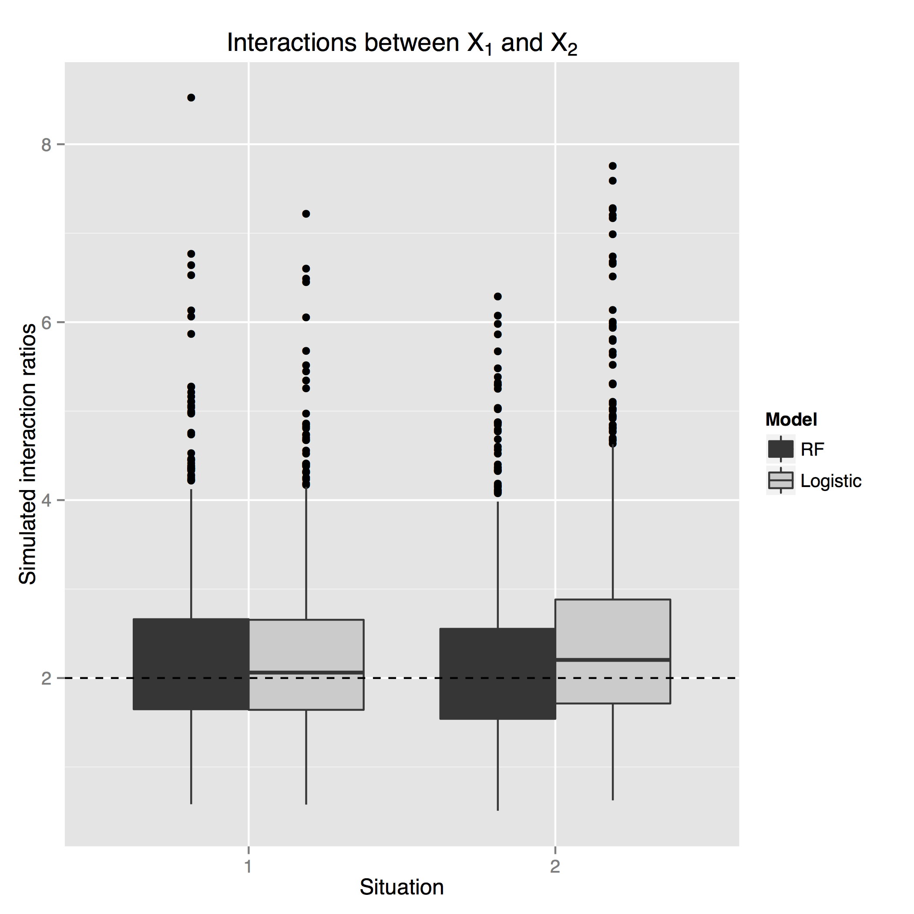
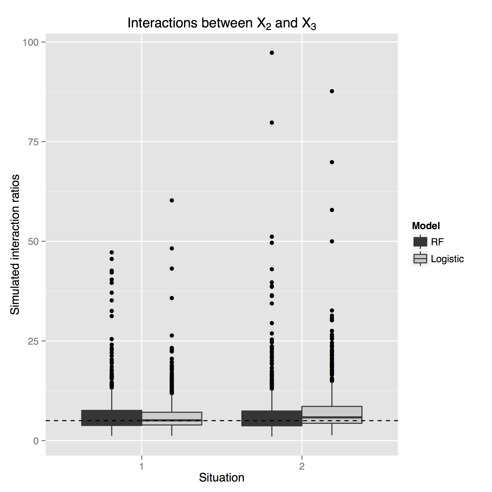

Probability machines
Risk estimation in a post-parameter world
Abhijit Dasgupta & James Malley
Effect size
Let's go back to your first regression course
"How much does the outcome change, on average, when a predictor changes by one unit, all other predictors remaining the same?"
Effect size
Let's go back to your first regression course
"How much does the outcome change, on average, when a predictor changes by one unit, all other predictors remaining the same?"
This is based on the concept of counterfactuals
- What would happen if a predictor changed by 1 unit keeping everything else the same?
- This is not something we can observe, but only something we can conceptualize
- Using multiple machines, we can actually estimate these counterfactuals directly for each observation!!!
- We don't need parameters in the model; we can do this nonparametrically
- Requires us to think about what exactly are the effects we want to interrogate
Counterfactuals
| X = 1 | X = 0 |
 |
The counterfactual argument is, in essence
If we put an observation in the other landscape, what would it do?
Counterfactual machine

Counterfactual machine

Counterfactual machine

Counterfactual machine
- PM\(_1\) captures the landscape for X=1
- PM\(_0\) captures the landscape for X=0
Now put each observation in each landscape and record its predicted outcome
Note, for each observation we now have a \(p_1\) and a $p_0$
Now we can compute conditional odds ratios using \[ OR = \frac{p_1(1-p_0)}{(1-p_1)p_0}\] for each observation, and look at group-specific odds ratios by averaging or taking medians
Simulations
We generate data from a logistic regression model with
- 10 independent binary features
- 3 features associated with outcome to various degrees
- 7 features not associated with outcome (to mimic sparseness)
Simulations
We fit three models to the generated data
Main effects logistic regression
glm(y~x1+x2+x3+..., family=binomial)Main effects + two-way interactions logistic regression
glm(y~(x1+x2+x3+...)^2, family=binomial)Random forest regression
randomForest(y~x1+x2+x3+...)
For this entire exercise, we do not change this code
Simulations

Look at a main effects model
- All 3 are unbiased
- RF does as well as logistic regression for efficiency
WARNING: Soapbox time
Logistic regression and odds ratios
Logistic regression (the industry standard) gives us odds ratios (the industry standard)
Logistic regression and odds ratios
Logistic regression (the industry standard) gives us odds ratios (the industry standard)
Please try explaining what an odds ratio is
Logistic regression and odds ratios
Logistic regression (the industry standard) gives us odds ratios (the industry standard)
The odds ratio is interpreted as a risk ratio
- Can only do this when the outcome is rare
The odds ratio might be reasonable for gamblers (Hello, Bernoullis), but probably not for clinicians
If I had my way, we'd report either risk ratios or risk differences
Now back to regular programming
Counterfactual machine
We have individual \(p_1\) and \(p_0\), so we can directly compute
- risk differences \[ RD = p_1 - p_0 \]
- risk ratios \[ RR = p_1/p_0 \]
Multiple machines model
What about interactions?
Since we have a way of estimating counterfactuals, estimating conditional interaction effects are straightforward
Make 4 machines to "capture landscapes" when
- X1 = 0, X2 = 0 (\(\rightarrow p_{00}\))
- X1 = 1, X2 = 0 (\(\rightarrow p_{10}\))
- X1 = 0, X2 = 1 (\(\rightarrow p_{01}\))
- X1 = 1, X2 = 1 (\(\rightarrow p_{11}\))
Now compute the appropriate contrast (\(p_{11} - p_{10} - p_{01} + p_{00}\)) or ratio \[\frac{p_{11}(1-p_{10})}{p_{10}(1-p_{11})}/\frac{p_{01}(1-p_{00})}{p_{00}(1-p_{01})}\]
Multiple machines models
 
More about interactions
The Counterfactual machine is cumbersome when you have many features.
We can actually do a faster scan of the data to find 2-way interactions
We call it the Interactor
The Interactor
We fit one PM to the data and get predicted probabilities
- Average probabilities over X1=1, X2=1 \(\rightarrow P_{11}\)
- Average probabilities over X1=0, X2=1 \(\rightarrow P_{01}\)
- Average probabilities over X1=1, X2=0 \(\rightarrow P_{10}\)
- Average probabilities over X1=0, X2=0 \(\rightarrow P_{00}\)
We can now create classical interaction plots either on natural or logit scale
The Interactor


The Interactor
How about when we need to scan an entire genome?
- Run 1 PM on the dataset
- Compute interaction contrasts for each pair of features
- Create an interaction heatmap to find interaction hotspots
- Drill down (MDS, more analyses)